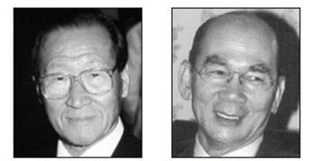
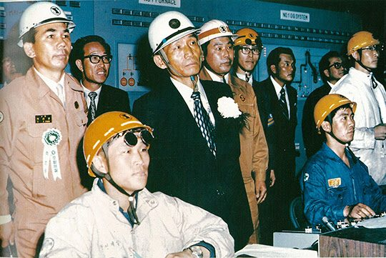

보도일 2015-04-07출처 조선일보 프리미엄조선 연재
1978년 10월 초순, 청와대에서 월간 경제장관회의가 열렸다. 부총리, 재무부 장관, 상공부 장관, 건설부 장관 등 경제부처 각료와 대통령 비서실장, 경제수석비서관이 한자리에 모였다. 세간의 관심이 집중된 제2제철소의 실수요자 선정 문제가 거론되지 않을 수 없었다. 의견은 딱 갈렸다. 청와대 참모들은 현대를 지지하고, 상공부 장관과 건설부 장관은 포스코를 지지했다. 논리도 팽팽히 맞섰다.
경제수석은 민간기업 육성, 시장경제 촉진, 선의의 경쟁, 중동 산유국들과 밀접한 현대의 외자도입 능력 등을 내세운 반면에, 상공부 장관은 포철의 노하우, 기술능력, 사명감으로 뭉친 정신력, 세계시장 진출 가능성, 국제 신인도 등을 내세웠다.
회의는 결론을 낳지 못했다. 양측의 대립이 그대로 대통령의 손에 넘겨졌다. 과연 박정희는 어떤 절차를 거쳐 어떤 결정을 내릴 것인가?

상공부 장관 최각규가 제2제철소 실수요자 관련 결재서류를 대통령에게 올렸다. 박정희는 대충 훑어보고 “놓고 가라”고만 했다. 결재를 하거나 수정을 지시하는 평소와는 다른 모습이었다. 그때 박정희는 속으로 의아해하고 있었던 것이다. 가끔 제2제철소에 대한 청와대 참모의 보고가 올라오고 언론이 종종 거론을 했지만, 정작 핵심 당사자인 박태준은 아무런 연락이 없었으니….
2014년 2월 13일 최각규는《포스코신문》인터뷰에서 해당 장면에 대해 “박정희 대통령의 독특한 리더십의 일면을 볼 수 있었다”며 다음과 같은 회고를 남겼다.
<“청와대란 수많은 정보가 모여드는 곳인데, 대통령께서 제2제철 관련 정보에 어두웠을 리가 있겠어요? 당시는 실수요자도 입지도 결정되지 않은 상황이었기에 여기저기서 온갖 주장이 중구난방으로 흘러나오고 있는 상황이었지. 그런데 서류를 두고 가라고 하시면서 내일 아침 박태준 사장에게 청와대로 들어오라고 연락하고 헬기를 대기시켜 놓으라고 지시하는 거야. 다음날 박 사장을 헬기에 동승시켜 제철소 입지를 둘러봤어요.
실수요자와 입지를 동시에 결정한 거나 다름없는 일이었어요. 내 뜻이 이러하니 다들 그렇게 알라는 시그널을 보내면서 소모적인 논쟁을 차단하신 거지.”>
1978년 10월 16일 대통령이 포철 사장을 청와대로 부르라는 지시를 내렸을 때 아마도 비서진은 김이 팍 새는 느낌부터 받았을 것이다. 박태준을 청와대로 오게 하라. 박정희의 그 지시가 최각규의 회고 그대로 “제2제철소는 박태준에게 맡긴다”는 명확한 신호라는 것을, 왜 비서진이 눈치 채지 못했으랴. 줄기차게 현대를 밀어온 처지에서는 난감하기도 하고 찜찜하기도 했을 것이다.
대통령 면담보다 30분 앞당겨 도착해 달라는 비서진의 부탁을 받은 박태준은 그것이 일종의 ‘예비회의 또는 조율회의 제안’이란 점을 훤히 알아차렸으나 군말 없이 순순히 응해주었다. 하지만 제2제철소 실수요자 선정 문제는 결코 어정쩡하게 타협하거나 특정인의 입장을 감안해줄 수 없는, 국가적 명운과 직결된 대의며 대사라는 인식을 강철처럼 단단히 챙기고 있었다. 그러니 당최 그 회의가 어떤 성과를 낳을 리야 만무했다.
“이제는 얼굴 보기도 힘들구먼.”
박정희가 반갑게 박태준을 맞았다.
“오래 뵙지 못했습니다.”
“그래, 모든 일이 잘 되어가나? 그래서 얼굴 보기가 어려웠나?”
박태준은 잠깐 사이를 뒀다. 벌써 열 달 넘게 끌어온 제2제철소 쟁탈전을 떠올리는 그는 격한 감정을 억누르며 좀 냉소적으로 말했다.
“제가 뵙고 싶어도 그러기가 매우 어려웠을 것입니다.”
“그래도 나는 임자가 보고 싶었어.”
박태준은 오랜 고립감이 녹는 듯했다. 안 그래도 할 말은 남김없이 할 작정이었지만, 한결 마음이 편안해졌다. 몇 마디 안부와 포철 근황에 대한 대화가 오간 다음에 박정희가 제2제철소를 탁자에 올려놓았다.

“임자의 말을 들어보고 결정하기로 했어.”
“여기 계신 분들이 객관적으로 많이 연구하셔서 보고 드린 것으로 알고 있습니다.”
박정희가 씩 웃으며 박태준을 쳐다보았다.
“나는 포철 사장 박태준의 보고도 들어야겠어. 시작해.”
박태준은 힐끗 자신의 손목시계부터 보았다.
“하지만 시간이 별로 없지 않습니까?”
“시간 걱정은 말고, 하고 싶은 말이 있으면 다 해봐.”
(하편에서 계속)